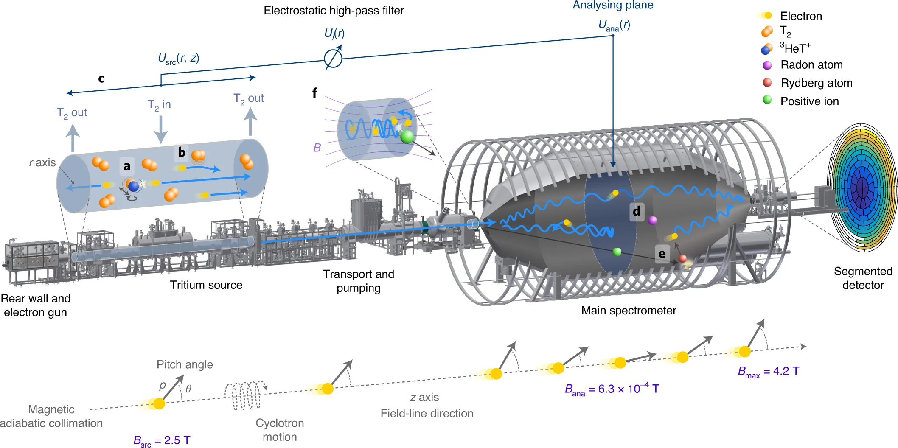

01 / The measurement
The tritium β-spectrum
near its endpoint
Neutrinos are so light that their mass is hard to measure directly. KATRIN looks for their subtle influence on the energy carried away by electrons in tritium beta decay.
When a tritium nucleus decays, it produces a helium nucleus, an electron, and an electron antineutrino. The available energy is shared between the two particles. Very close to the maximum possible electron energy, even a tiny neutrino mass changes the shape of the spectrum.
KATRIN measures that spectrum near its endpoint. The challenge is to separate the small mass-related signal from background and from other effects in the instrument and the model.
02 / A 70 m experiment
MAC-E filter
spectroscopy
β-electrons from a windowless gaseous molecular tritium source are guided magnetically to the main spectrometer, a MAC-E filter (magnetic adiabatic collimation with electrostatic filter). As the magnetic field drops by almost four orders of magnitude towards the analysing plane, the electrons’ momenta are collimated along the field lines, and a retarding potential transmits only electrons whose energy exceeds qU. The detector counts the transmitted electrons.
Scanning the retarding potential measures the integral spectrum near the endpoint. Interpreting it requires a response model of the whole beamline: energy loss in the source gas, the source potential, the molecular final states, the magnetic fields and potentials of the spectrometer, and several background processes, each of which enters the analysis as a systematic effect.

03 / Bayesian analysis
Posterior inference
on the neutrino mass
The analysis infers the squared neutrino mass mν2 together with the endpoint, signal normalization, background rate and the parameters of the systematic model from the integral spectrum measured at each retarding potential.
In a Bayesian treatment, the Poisson likelihood of the observed counts is combined with priors on the nuisance parameters, constrained by calibration measurements, and the joint posterior is sampled by MCMC. Systematic uncertainties are marginalized rather than propagated separately, correlations between mν2 and the endpoint or background are retained, and a physical prior on mν2 ≥ 0 yields a credible upper limit directly.
The second data release added 744 live hours. KATRIN ran its tritium source at nominal strength, while improved vacuum in the main spectrometer cut background near the endpoint by 25%.
The first Bayesian analysis of KATRIN data, carried out at Berkeley Lab, covered the first two campaigns. The first campaign’s posterior became the prior for the second, so the analysis could combine what both data sets said about the neutrino mass.
The combined Bayesian posterior gave an upper limit of 0.73 eV/c2 at 90% credibility. KATRIN’s other analysis teams used frequentist methods; their combined limit was 0.8 eV/c2 at 90% confidence. The independent approaches were consistent. Probability estimates from the Bayesian analysis also supported cosmological studies.
A posterior can also be propagated beyond the experiment, for example as a prior in cosmological fits that combine the KATRIN result with cosmic microwave background and baryon acoustic oscillation data.
The systematic model is where most of the analysis effort goes. Each effect below enters the likelihood through nuisance parameters, with priors from calibration measurements, and several of them are correlated with mν2, the endpoint or the background. For the five-campaign data set the systematic contributions, added in quadrature, amount to about 0.07 eV2, two thirds of the statistical uncertainty. With the full data set the statistical uncertainty shrinks, and the systematic model carries a growing share of the error budget.
| Effect | Uncertainty | Relative size |
|---|---|---|
| Statistical | 0.108 | |
| Non-Poissonian background | 0.015 | |
| Column density × inelastic cross-section | 0.052 | |
| Energy-loss function | 0.034 | |
| Scan-step-duration-dependent background | 0.027 | |
| Source-potential variations | 0.022 | |
| Retarding-potential-dependent background slope | 0.007 | |
| Analysing-plane magnetic field and potential | 0.006 | |
| Source magnetic field | 0.004 | |
| Maximum magnetic field | 0.004 | |
| Rear-wall residual tritium background | 0.004 | |
| Molecular final-state distribution, activity fluctuations, detector efficiency, retarding-potential stability and reproducibility, theoretical corrections | < 0.002 each |
90% posterior upper limit. The first data set’s posterior was used as the prior for the second.
04 / Scaling the analysis
From two campaigns
to the full data set
A joint Bayesian fit of all campaigns has to sample a posterior over hundreds of nuisance parameters, with a likelihood that is expensive to evaluate once systematic effects are included. KATRIN-MCMC, developed in collaboration with KIT, is a modular Python framework designed for that problem.
The framework builds on the KaFit spectrum model and interfaces with Fitrium, with Netrium support planned. Systematic effects enter as nuisance parameters with physically motivated priors, so their uncertainty propagates into the neutrino-mass posterior rather than being added afterwards; each model component was validated against the reference fits before sampling.
The design separates likelihood, sampler and priors, so that models and sampling algorithms can be exchanged independently. It supports affine-invariant ensemble sampling and nested sampling, checkpoints chains to HDF5 for restart across wall-time limits, and computes marginal posteriors, highest-density intervals and parameter correlations.
A statistical-only feasibility fit across KNM1–5 on Cori, with 136 parameters, 272 walkers, 2.9 × 107 samples and 28 GB of chain data, established that the sampling scales to the multi-campaign problem. The benchmarks below quantify what it would take to add the full systematic model, and set the performance requirements for the analysis.
Numbers are from internal 2021 development studies, not from a collaboration result.
Mass and systematics
Statistical models connected through Fitrium and KaFit; Netrium compatibility was planned.
Chains at scale
Ensemble and nested samplers explored the posterior with priors suited to the parameters.
Uncertainty, not one number
HDF5 chains supported posterior summaries, correlations, and continued runs.
Systematics changed the compute cost
Adding systematic effects reduced throughput by a factor of about 33 in this early benchmark.
Benchmark of the early KaFit-based implementation (2021). Statistical-only sampling was practical; full-model runs required faster likelihood evaluation.